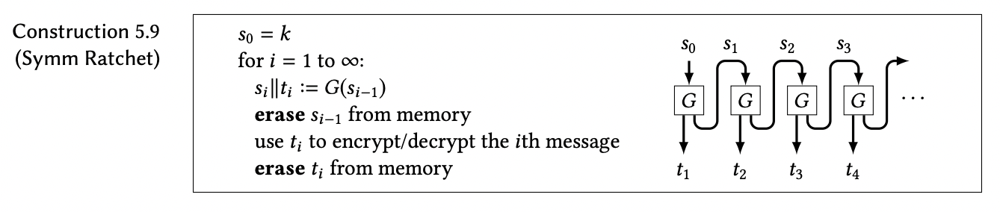

We know that with a key that only you and one other person know, you can encrypt secret messages so that even if you're 'overheard' by an eavesdropper, the person spying on you will have no idea what you're saying. This sounds pretty foolproof, so why do the extra work of generating new keys?
Well, it's generally not good practice to use the same key for more than one encryption/decryption. After all, what if your eavesdropper somehow learns your key? Then they'll be able to decipher all of your messages - past, present, and future - but you and your partner will still think your messages are secret! That's not very secure.
A good solution to this is to generate a new key every time you want to send a message. It'd be pretty difficult to coordinate with your partner if you had to think up a new key every time you sent a message, and you'd have the added threat of your key being overheard. So how can we come up with new keys in a way that's easy to do and won't risk someone eavesdropping and finding out our new key?
Now presenting: the symmetric ratchet! It takes in your original key as a seed and generates two new strings, t and s, where t will be your new key, and s is the seed that will get the next new key. The function is deterministic, meaning that the same input will always result in the same output, so you and your partner will have an endless supply of new keys that are guaranteed to match.
A symmetric ratchet is an excellent way to come up with new keys, and has the added benefit of forward secrecy. That means that even if an eavesdropper learns one of your new keys (and therefore knows how to compute all of your future keys) they have no idea what your past keys were, and therefore have no way of figuring out what your past messages said.
Symmetric ratchet relies on a function called a PRG, a pseudo-random generator. What that means is that the function takes in a string or number and outputs something "random", or at least something that looks random to someone who doesn't know the input. A length-doubling PRG, which is what the symmetric ratchet uses, does exactly what it sounds like - it takes in an input with a given length, say length n, and outputs something "random" looking with length 2n.
This new output with double the length of our input is what we use. The first half of the output, t, is what we use as our new key. You might think that we could also use it as an input for our next t, but remember that the output of a PRG only looks random if you don't know the input! If we used t as our key and our input to generate our next key, the outputs wouldn't look "random" enough and it would be much easier to crack our encryption. The second half of the output, s, is what we use the generate our next key.
The great (and necessary) thing about PRGs is that they're deterministic, meaning that the same input will always get you the same output. This means that as long as you and your partner both start out with the same original key (or seed), your updated keys will always match up.
Given a secure length-doubling pseudo-random generator (PRG), G, and a starting key, k, you and your partner can generate as many updated keys as you'd like, and be confident that you both have the same information.
If G takes in n bits and then outputs 2n psuedo-random bits, we can use the first n bits as our updated key and the last n bits as our seed for G to generate the next updated key. A helpful diagram from chapter 5 of Mike Rosulek's The Joy of Cryptography is shown below.
Using the above diagram as a visual aid, we can convince ourself that that starting from k = s0 and iterating through the PRG twice to get t2 is functionally the same as starting with s1 and iterating throug the PRG once. This is why we don't need to save any past seeds, including the original key that you and your partner came up with.